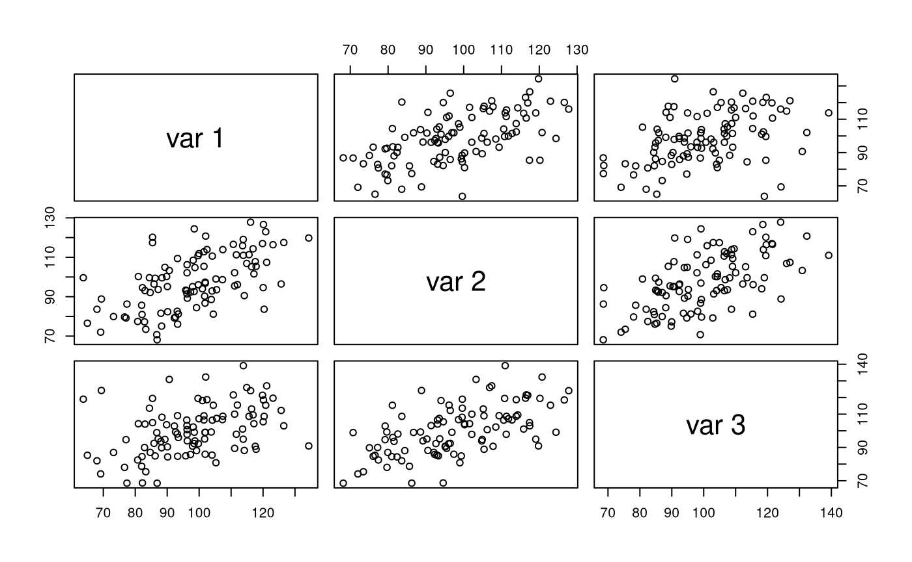
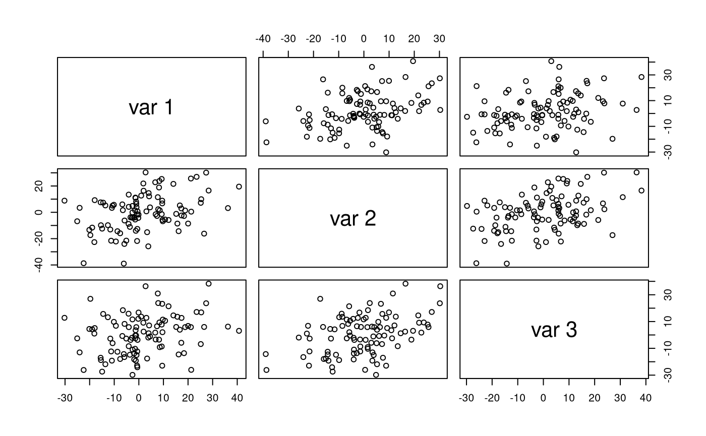

vignettes/examples/examples_mvnramsigma2.Rmd
examples_mvnramsigma2.Rmdlibrary(jeksterslabRdata)
See mvnramsigma2() for more details.
mu
Set matrices.
mu <- c(100, 100, 100) A <- matrix( data = c(0, sqrt(0.26), 0, 0, 0, sqrt(0.26), 0, 0, 0), ncol = 3 ) sigma2 <- c(225, 225, 225) F <- I <- diag(3)
Run the function.
X <- mvnramsigma2(n = 100, mu = mu, A = A, sigma2 = sigma2, F = F, I = I)
Explore the output.
str(X) #> num [1:100, 1:3] 106.5 121.7 77.7 109.7 100.8 ... #> - attr(*, "dimnames")=List of 2 #> ..$ : NULL #> ..$ : NULL pairs(X)
colMeans(X) #> [1] 102.2919 102.7579 101.5572 cov(X) #> [,1] [,2] [,3] #> [1,] 221.46314 70.33215 82.06658 #> [2,] 70.33215 164.47666 116.79141 #> [3,] 82.06658 116.79141 243.58634 cor(X) #> [,1] [,2] [,3] #> [1,] 1.0000000 0.3685115 0.3533370 #> [2,] 0.3685115 1.0000000 0.5834885 #> [3,] 0.3533370 0.5834885 1.0000000
Run the function.
Xstar <- mvnramsigma2(n = 100, mu = mu, A = A, sigma2 = sigma2, F = F, I = I, R = 100)
Explore the output.
str(Xstar, list.len = 6) #> List of 100 #> $ : num [1:100, 1:3] 92 89.6 96.5 79 124.4 ... #> ..- attr(*, "dimnames")=List of 2 #> .. ..$ : NULL #> .. ..$ : NULL #> $ : num [1:100, 1:3] 87.9 97.8 120.2 80.8 101.8 ... #> ..- attr(*, "dimnames")=List of 2 #> .. ..$ : NULL #> .. ..$ : NULL #> $ : num [1:100, 1:3] 85.2 87.4 102.6 116.4 126.6 ... #> ..- attr(*, "dimnames")=List of 2 #> .. ..$ : NULL #> .. ..$ : NULL #> $ : num [1:100, 1:3] 138.7 94.9 103.8 91.3 100 ... #> ..- attr(*, "dimnames")=List of 2 #> .. ..$ : NULL #> .. ..$ : NULL #> $ : num [1:100, 1:3] 112 132 112 111 112 ... #> ..- attr(*, "dimnames")=List of 2 #> .. ..$ : NULL #> .. ..$ : NULL #> $ : num [1:100, 1:3] 113.8 92.4 99.6 106.7 119.7 ... #> ..- attr(*, "dimnames")=List of 2 #> .. ..$ : NULL #> .. ..$ : NULL #> [list output truncated]
M
Set matrices.
M <- c(100, 50, 50) A <- matrix( data = c(0, sqrt(0.26), 0, 0, 0, sqrt(0.26), 0, 0, 0), ncol = 3 ) sigma2 <- c(225, 225, 225) F <- I <- diag(3)
Run the function.
X <- mvnramsigma2(n = 100, M = M, A = A, sigma2 = sigma2, F = F, I = I) #> mu = NULL. mu is computed using M.
Explore the output.
str(X) #> num [1:100, 1:3] 102 77.1 73.2 96.2 81 ... #> - attr(*, "dimnames")=List of 2 #> ..$ : NULL #> ..$ : NULL pairs(X)

colMeans(X) #> [1] 98.40955 97.69624 100.29360 cov(X) #> [,1] [,2] [,3] #> [1,] 228.4191 126.3878 94.0959 #> [2,] 126.3878 204.7970 125.3846 #> [3,] 94.0959 125.3846 220.9970 cor(X) #> [,1] [,2] [,3] #> [1,] 1.0000000 0.5843555 0.4188045 #> [2,] 0.5843555 1.0000000 0.5893715 #> [3,] 0.4188045 0.5893715 1.0000000
Run the function.
Xstar <- mvnramsigma2(n = 100, M = M, A = A, sigma2 = sigma2, F = F, I = I, R = 100) #> mu = NULL. mu is computed using M.
Explore the output.
str(Xstar, list.len = 6) #> List of 100 #> $ : num [1:100, 1:3] 102.2 100.4 68.3 90 110.4 ... #> ..- attr(*, "dimnames")=List of 2 #> .. ..$ : NULL #> .. ..$ : NULL #> $ : num [1:100, 1:3] 117.7 96.9 100.7 105.8 96.5 ... #> ..- attr(*, "dimnames")=List of 2 #> .. ..$ : NULL #> .. ..$ : NULL #> $ : num [1:100, 1:3] 126.4 116.3 75.8 116.6 98.5 ... #> ..- attr(*, "dimnames")=List of 2 #> .. ..$ : NULL #> .. ..$ : NULL #> $ : num [1:100, 1:3] 90.6 82.4 81.5 65.8 96.5 ... #> ..- attr(*, "dimnames")=List of 2 #> .. ..$ : NULL #> .. ..$ : NULL #> $ : num [1:100, 1:3] 99.8 115.4 95 113.6 103.3 ... #> ..- attr(*, "dimnames")=List of 2 #> .. ..$ : NULL #> .. ..$ : NULL #> $ : num [1:100, 1:3] 93.6 85.7 90.6 124.1 72.6 ... #> ..- attr(*, "dimnames")=List of 2 #> .. ..$ : NULL #> .. ..$ : NULL #> [list output truncated]
mu = NULL and M = NULL
Set matrices.
A <- matrix( data = c(0, sqrt(0.26), 0, 0, 0, sqrt(0.26), 0, 0, 0), ncol = 3 ) sigma2 <- c(225, 225, 225) F <- I <- diag(3)
Run the function.
X <- mvnramsigma2(n = 100, A = A, sigma2 = sigma2, F = F, I = I) #> mu = NULL and M = NULL. mu is set to a vector of zeroes of length 3.
Explore the output.
str(X) #> num [1:100, 1:3] -1.48 27.37 -6.1 2.75 4.18 ... #> - attr(*, "dimnames")=List of 2 #> ..$ : NULL #> ..$ : NULL pairs(X)

colMeans(X) #> [1] 1.7117198 -0.1267246 0.3042776 cov(X) #> [,1] [,2] [,3] #> [1,] 189.85062 73.10577 54.25694 #> [2,] 73.10577 194.12860 82.50376 #> [3,] 54.25694 82.50376 214.78444 cor(X) #> [,1] [,2] [,3] #> [1,] 1.0000000 0.3808035 0.2686878 #> [2,] 0.3808035 1.0000000 0.4040430 #> [3,] 0.2686878 0.4040430 1.0000000
Run the function.
Xstar <- mvnramsigma2(n = 100, A = A, sigma2 = sigma2, F = F, I = I, R = 100) #> mu = NULL and M = NULL. mu is set to a vector of zeroes of length 3.
Explore the output.
str(Xstar, list.len = 6) #> List of 100 #> $ : num [1:100, 1:3] 3.65 -21.73 -7.37 3.96 30.68 ... #> ..- attr(*, "dimnames")=List of 2 #> .. ..$ : NULL #> .. ..$ : NULL #> $ : num [1:100, 1:3] -6.18 3.03 12.13 1.04 3.44 ... #> ..- attr(*, "dimnames")=List of 2 #> .. ..$ : NULL #> .. ..$ : NULL #> $ : num [1:100, 1:3] -18.07 -0.99 20.89 34.74 16.06 ... #> ..- attr(*, "dimnames")=List of 2 #> .. ..$ : NULL #> .. ..$ : NULL #> $ : num [1:100, 1:3] -1.74 8.33 4.52 6.34 13.42 ... #> ..- attr(*, "dimnames")=List of 2 #> .. ..$ : NULL #> .. ..$ : NULL #> $ : num [1:100, 1:3] -12.31 -6.17 10.89 9.31 -11.42 ... #> ..- attr(*, "dimnames")=List of 2 #> .. ..$ : NULL #> .. ..$ : NULL #> $ : num [1:100, 1:3] -18.47 -19.04 18.3 -5.91 30.55 ... #> ..- attr(*, "dimnames")=List of 2 #> .. ..$ : NULL #> .. ..$ : NULL #> [list output truncated]